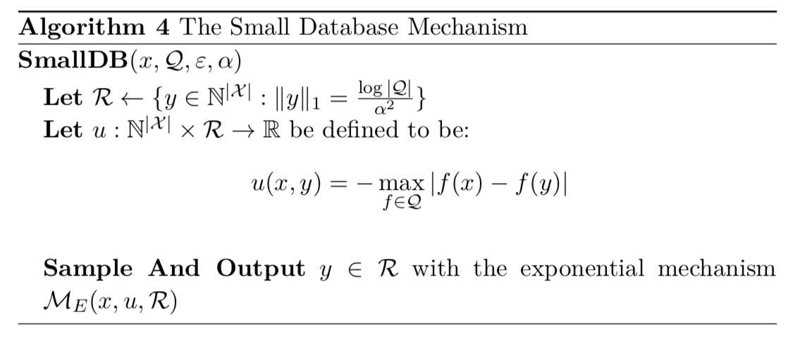

4.1 SmallDB：离线算法
在本节中，我们给出一种基于采样思想得到一个小数据库的算法，并用于指数机制上。我们将表明，对于计数查询，只需考虑较小的数据库即可：它们的大小仅是查询类的函数以及我们所需的近似精度α，而私有数据库大小 ∥x∥1 不是关键。这很重要，因为它将允许我们同时为所有足够大的数据库保证在指数机制范围内至少有一个数据库，这个数据库在查询 Q 中可以很好地近似于 x，并且还能保证在数据库中没有太多数据库消除“好”数据库上的概率质量。

我们首先认识到 SmallDB 机制是 ε- 差分隐私的。
命题 4.1 SmallDB 机制是 (ε,0)- 差分隐私的。
【证明】 SmallDB 机制是指数机制的一个简单实例，因此其隐私性服从 定理3.10
我们可以类似地使用指数机制分析方式，对 SmallDB 机制进行分析，以了解其效用保证。但是首先，我们必须证明我们选择范围 R={y∈N∣X∣:∥y∥1=α2log∣Q∣}，其输出的所有数据库集合的大小为：log∣Q∣/α2。
【命题 4.1 证毕】
定理 4.2 对于线性查询 Q 的任何有限类，如果 R={y∈N∣X∣:∥y∥1=α2log∣Q∣} 则对于所有 x∈N∣X∣，存在一个 y∈R 使得：
f∈Qmax∣f(x)−f(y)∣≤α
成立。
换句话说，我们将证明对于线性查询的任何集合 Q，对于任何数据库 x，都有一个“小”数据库 y，其大小为 ∥y∥1=α2log∣Q∣ ，这个“小”数据库能将 Q 中每个查询的答案编码，编码误差最大为
α。
引理 4.3（采样边界） 对于任何 x∈N∣X∣ 和 任何
线性查询集合 Q ，存在一个数据库 y，其大小为：
∥y∥1=α2log∣Q∣
使得：
f∈Qmax∣f(x)−f(y)∣≤α
【证明】 令 m=α2log∣Q∣ 。 我们将从 x 的元素中提取 m 个均匀随机的样本来构建数据库 y。 具体来说，对于 i∈{1,...,m}，令 Xi 为一个以概率 xj/∥x∥1 从 χj∈X 取值的随机变量，令 y 为包含元素 X1,...,Xm 的数据库。现在固定任何 f∈Q 并考虑概率 f(y)。我们有：
f(y)=∥y∥11i=1∑∣X∣yi⋅f(χi)=m1i=1∑mf(Xi)
我们注意到和的每个项 f(Xi) 是有界随机变量，取值为 0≤f(Xi)≤1，其期望为：
E[f(Xi)]=j=1∑∣X∣∥x∥1xjf(χj)=f(x)
f(y) 的期望为：
E[f(y)]=m1i=1∑mE[f(Xi)]=f(x)
因此，我们可以应用 定理3.1 中所述的切尔诺夫不等式，这使：
Pr[∣f(y)−f(x)∣>α]≤2e−2mα2
在所有线性查询 f∈Q 上使用布尔不等式，我们得到：
Pr[f∈Qmax∣f(y)−f(x)∣>α]≤2∣Q∣e−2mα2
当 m=α2log∣Q∣ 使等式右边小于 1（只要 Q>2 ），z这证明了存在一个满足上述界限的大小为 m 的数据库，从而完成了引理的证明。
【引理 4.3 证毕】。
因为 R 必包含所有大小为 α2log∣Q∣ 的数据库，可以简单地得出 定理4.2 的证明。
命题 4.4 令 Q 为线性查询的任何类别。 令 y 为
SmallDB(x,Q,ε,α)输出的数据库。然后以 1−β 的概率有：
f∈Qmax∣f(x)−f(y)∣≤α+ε∥x∥12(α2log∣X∣log∣Q∣+log(β1))
【证明】 应用指数机制的效用边界定理 （定理 3.11），其中 Δu=∥x∥11,OPTu(D)≤α（由 定理 4.2 得来），我们发现：
Pr[f∈Qmax∣f(x)−f(y)∣≥α+ε∥x∥12(log(∣R∣)+t)]≤e−t
我们通过两步完成证明：（1）注意到数据库 y 的大小 R 至多为 log∣Q∣/α2，所以 ∣R∣≤∣X∣log∣Q∣/α2；（2）由于概率为：1−β，所以令 t=log(β1)。
【命题 4.4 证毕】。
最后，我们要声明 SmallDB 的效用定理。
定理4.5 通过适当选择 α，令 y 为 SmallDB(x,Q,ε,2α) 的数据库输出，我们可以确保概率为 1−β 时有：
f∈Qmax∣f(x)−f(y)∣≤(ε∥x∥116log∣X∣log∣Q∣+4log(β1))1/3(4.2)
等价地，对于任何数据库 x ，其：
∥x∥1≥εα316log∣X∣log∣Q∣+4log(β1)(4.3)
有概率 1−β 使得 maxf∈Q∣f(x)−f(y)∣≤α。
【证明】 根据定理 4.4 我们有 ：
f∈Qmax∣f(x)−f(y)∣≤2α+ε∥x∥12(α24log∣X∣log∣Q∣+log(β1))
设置该量最大为 α ，则证明式（4.3）成立。即可推出式 （4.2），同时能能出式（4.4）
请注意，该定理指出，对于固定的 α 和 ε，即使 δ=0，也可以回答与数据库大小成指数数量的查询（查询数量 k≤exp(O(log∣X∣α3ε∥x∥1))）。这与拉普拉斯机制相反，当我们直接拉普拉斯机制用于回答线性查询时，只能线性大小的查询。
还请注意，在此讨论中，考虑标准化查询最为方便。 但是，我们可以简单地乘以 ∥x∥1来获得未标准化查询的相应范围：
定理4.6（非标准化查询的精度定理） 通过适当选择 α，令 y 为 SmallDB(x,Q,ε,2α) 的数据库输出，我们可以确定当概率为 1−β 时：
f∈Qmax∣f(x)−f(y)∣≤∥x∥12/3(ε∥x∥116log∣X∣log∣Q∣+4log(β1))1/3(4.4)